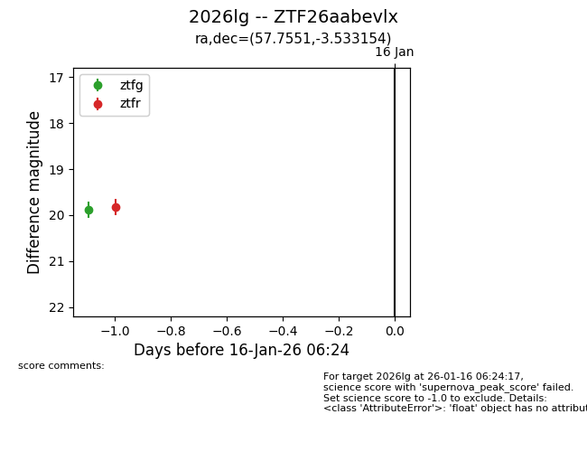
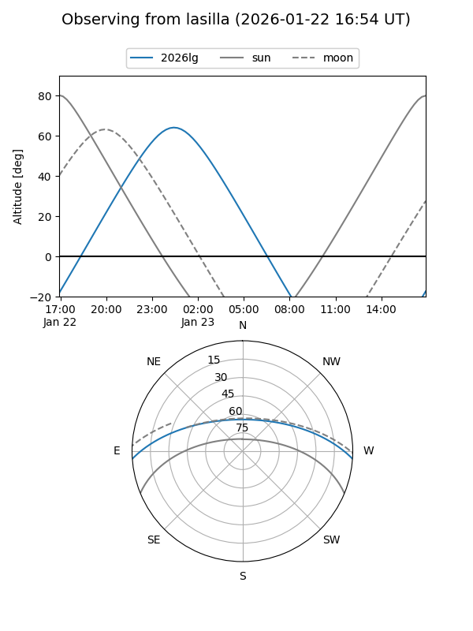
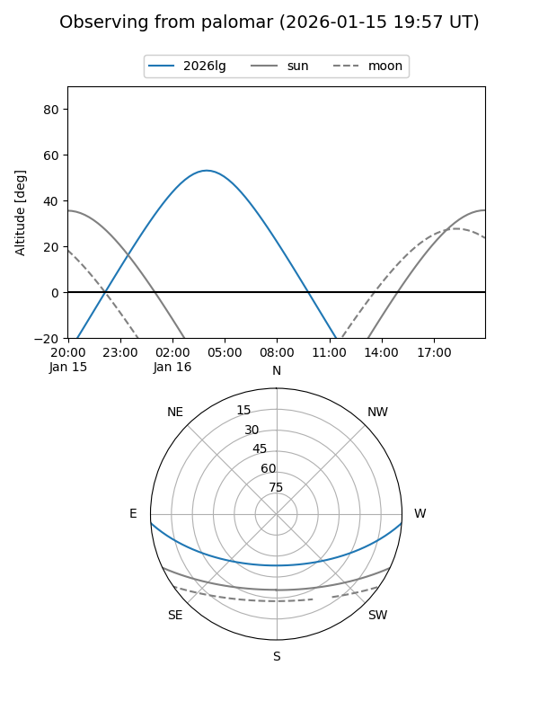
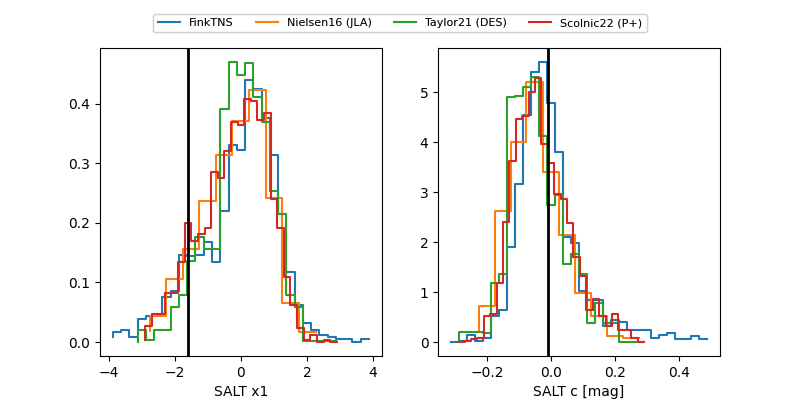

2026lg
Target 2026lg at 2026-01-26 23:21
Aliases and brokers:
FINK: link
Lasair: link
ALeRCE: link
TNS: link
YSE: link
alt names
ZTF26aabevlx (ztf,fink_ztf)
2026lg (tns,yse)
Coordinates:
equatorial (ra, dec) = 57.7551,-3.53315
equatorial (HMS+DMS) = 03:51:01.23,-03:31:59.35
galactic (l, b) = (192.1355,-41.09913)
Flags:
Photometry:
last ztfg=20.01, ztfr=19.82
2 ztfg, 1 ztfr detections
Lightcurve

Visibility


Additional plots
